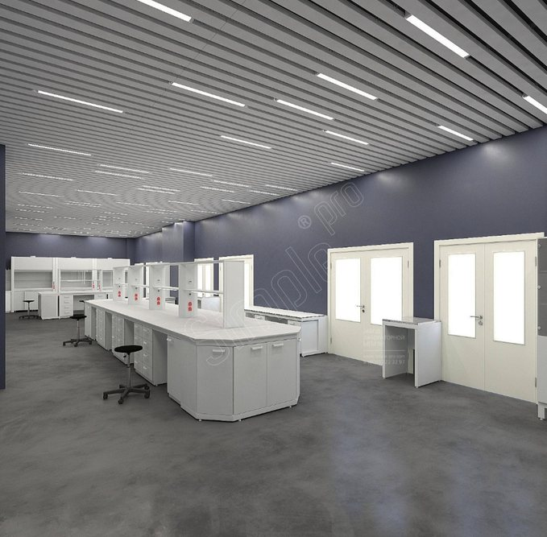
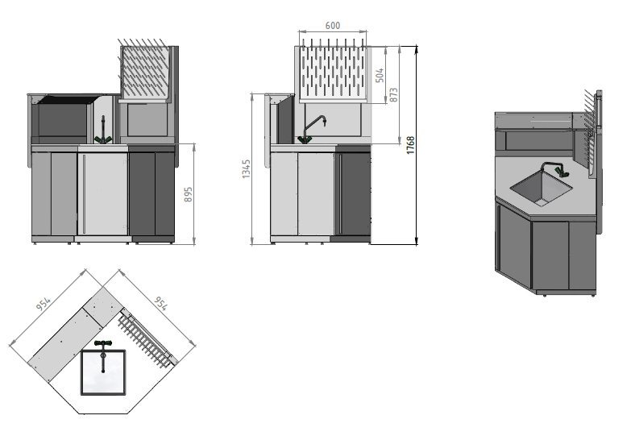
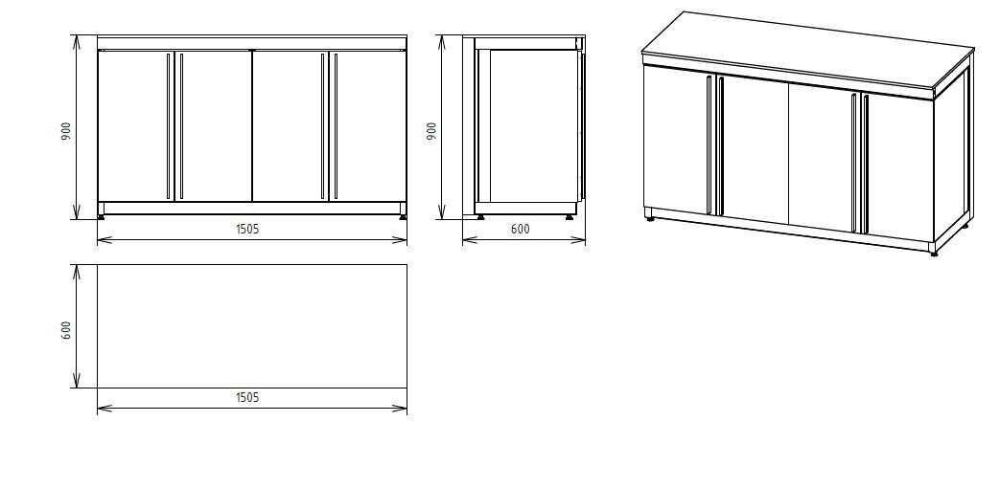
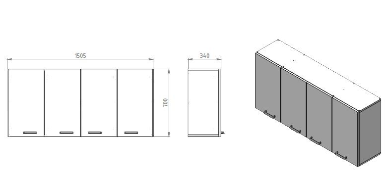

Simple PRO · Кейс · B2B
Кейс производителя лабораторной мебели: лаборатория молочного НИИ
Задача
Показать на реальном проекте, как компания дорабатывает серийную мебель под методики конкретной лаборатории.
Сделала
Объяснила, чем исследования молока нагружают мебель, разобрала три доработки по схеме «задача → решение» с размерами и материалами, показала сроки госконтракта и итог.
Итог
Кейс, в котором заказчик из похожей лаборатории узнаёт свои требования.
Лабораторная мебель для ФГАНУ «ВНИМИ»
Всероссийский научно-исследовательский институт молочной промышленности (ФГАНУ «ВНИМИ», Москва) ведёт фундаментальные и прикладные исследования в области производства и переработки молока. Его специалисты разрабатывают технологии новых продуктов и совершенствуют методы контроля качества сырья.
С компанией Simple PRO институт сотрудничает много лет. Лаборатории ВНИМИ обновляются по мере выделения бюджетных средств, и каждый новый этап переоснащения начинается с запроса к нам. Весной 2026 года служба снабжения прислала заявку на мебель для очередного помещения.
Особенности лаборатории заказчика
Исследования молока объединяют несколько направлений анализа. Физико-химические методы определяют массовую долю жира и белка, титруемую кислотность, плотность сырья. Микробиологический контроль выявляет постороннюю микрофлору, а органолептическая оценка дополняет приборные измерения.
Многие стандартные методики требуют агрессивных реактивов. Жир измеряют кислотным методом Гербера с концентрированной серной кислотой и изоамиловым спиртом. Содержание белка устанавливают по Кьельдалю, минерализуя пробу при кипячении в той же кислоте, а кислотность титруют раствором гидроксида натрия. Отсюда и требования к мебели в таком помещении:
-
устойчивость к концентрированным кислотам и щелочам;
-
стойкость к частой влажной уборке и дезинфекции;
-
безопасная работа с нагревательными приборами;
-
раздельное хранение реактивов, посуды и проб.
Для микробиологии важна ещё и чистота воздуха. Пыль с открытых полок переносит посторонние микроорганизмы на посуду и питательные среды, искажая результаты посевов. Эти особенности и определили большую часть пожеланий заказчика.
С каким запросом пришёл заказчик
Служба снабжения ВНИМИ попросила прорисовать расстановку мебели в лаборатории, чтобы ещё до закупки понять, где встанет каждое изделие. Наглядный проект пригодился и при подготовке к конкурсу.
Дизайнеры Simple PRO подготовили 3D-визуализацию, в которой отразили:
-
Островные столы. Центральный ряд со стеллажами и электроблоками, за которым удобно работать с двух сторон.
-
Пристенные линии. Столы вдоль стен с навесными секциями и рабочие места у дверей.
-
Шкафы и мойки. Вытяжное и моечное оборудование, привязанное к точкам подключения воды и вентиляции.
Визуализация показала, как мебель впишется в помещение и какой ширины останутся проходы. По ней же стало видно, какие позиции стоит доработать.

Часть изменений заказчик сформулировал заранее. Требовалось несколько нестандартных изделий на основе нашего конструктива, а вытяжные шкафы сотрудники попросили оснастить регулятором скорости вращения вентилятора. Он подстраивает силу тяги под вид работ: минерализация по Кьельдалю требует мощного отсоса паров, а для титрования хватает умеренного режима, на котором шкаф работает тише.
Задачи заказчика и решения Simple PRO
Три пожелания потребовали конструкторской доработки. Каждое мы разобрали с заказчиком отдельно и предложили решение на базе серийных изделий.
Угловой стол-мойка с полкой и стеллажом
В углу лаборатории требовался моечный пост, где вымытую посуду можно сразу оставить на просушку. Прямые мойки из каталога в такое место не встают, и полезная площадь пропала бы впустую.
Конструкторы спроектировали угловой стол-мойку со сторонами по 954 мм и тумбами под столешницей. Над чашей разместили штыревую сушилку для колб и пробирок, сбоку добавили полку для принадлежностей. Рабочая поверхность осталась на привычной высоте 895 мм, общая высота изделия со стеллажом составила 1768 мм.
Тумбы из кислотостойкого материала
Под столами планировали хранить реактивы, в том числе кислоты, и заказчику нужны были химически стойкие корпуса.
В стандартной линейке полипропиленовые тумбы предусмотрены только для вытяжных шкафов. Для ВНИМИ мы разработали аналогичные модули под лабораторные столы: блок размером 1505 × 600 × 900 мм с четырьмя дверцами.

Полипропилен устойчив к концентрированным азотной, серной, соляной и плавиковой кислотам и их парам, не впитывает влагу. Слабое место у материала одно: при сильном локальном нагреве он размягчается.
Новые тумбы позволили держать реактивы прямо у рабочего места, не загромождая проходы отдельными шкафами.
Навесные шкафы с глухими дверцами
Открытые полки собирают пыль, а в лаборатории с микробиологическим направлением это недопустимо. Заказчик попросил отказаться от открытого хранения.

Мы доработали стандартные навесные шкафы шириной 1505 мм и глубиной 340 мм: теперь каждая секция закрывается сплошной дверцей. Посуда и расходные материалы остаются чистыми, а гладкие фасады легко протирать при ежедневной уборке.
Сроки и этапы проекта
Производство и монтаж после подписания контракта заняли около двух месяцев. Этапы шли в таком порядке:
-
Проектирование. Подготовили 3D-визуализацию помещений и согласовали нестандартные позиции.
-
Конкурс. Заказчик провёл закупку через систему госзакупок.
-
Договор. Контракт подписали в апреле 2026 года.
-
Производство. Серийные и доработанные изделия изготовили на собственном заводе.
-
Сборка и монтаж. Мебель установили по плану и в июне 2026 года сдали объект.
Сроки поставки по госконтракту жёстко зафиксированы, и для бюджетного учреждения их соблюдение не менее важно, чем качество. В этом проекте график выдержан на всех этапах.
Результаты работы
Все пожелания клиента удалось выполнить, а мебель встала в помещения без переделок по месту. Что изменилось по итогам проекта:
-
Рабочие места расположены в центре зала и вдоль стен, между рядами остались удобные проходы.
-
Реактивы хранятся в кислотостойких тумбах рядом со столами.
-
Скорость вентилятора в вытяжных шкафах подбирают под методику.
-
Пустующий угол стал полноценным моечным постом.
-
Навесные шкафы с дверцами защищают посуду от пыли.

Новое помещение оснастили той же линейкой, что и предыдущие лаборатории института. Единое исполнение упрощает обслуживание и позволяет при необходимости переставлять изделия.
Оснащение лаборатории под ваши задачи
Работа над заказом начинается с чертежа помещения: по нему наши дизайнеры бесплатно готовят 3D-проект с расстановкой мебели и точками подключения коммуникаций. Выбрать столы, мойки и вытяжные шкафы можно в каталоге, где для каждой модели указаны размеры и комплектация. Позвоните по номеру 8 (800) 222-32-97 или напишите нам, чтобы получить консультацию и расчёт стоимости.